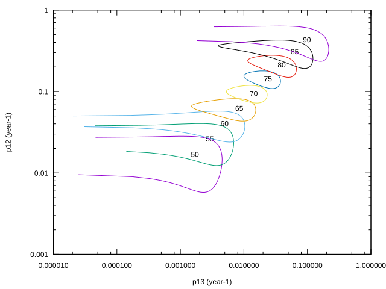
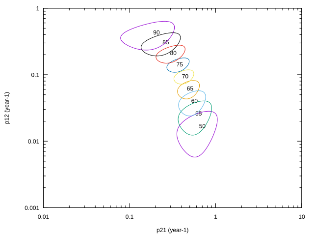
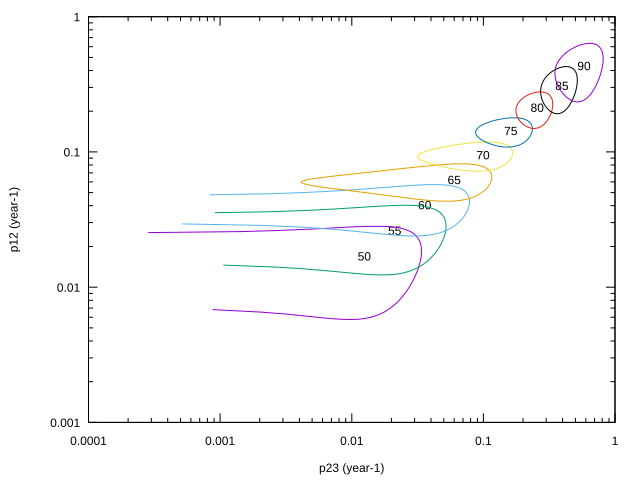
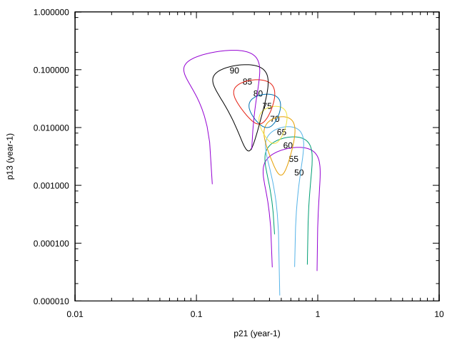
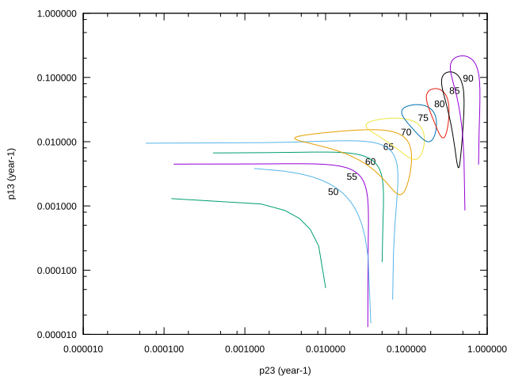
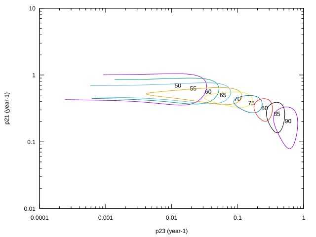

0.99r45
$Revision: 1.353 $ $Date: 2023/05/08 18:48:22 $
Title=adl
Datafile=dataHRFadl.txt Firstpass=1 Lastpass=2 Stepm=6 Weight=1 Model=1+age+
Current page is file HRFadl-cov.htm
Matrix of variance-covariance of pairs of step probabilities
Ellipsoids of confidence centered on point (pij, pkl) are estimated and drawn. It helps understanding how is the covariance between two incidences. They are expressed in year-1 in order to be less dependent of stepm.
Contour plot corresponding to x'cov-1x = 4 (where x is the column vector (pij,pkl)) are drawn. It can be understood this way: if pij and pkl where uncorrelated the (2x2) matrix of covariance would have been (1/(var pij), 0 , 0, 1/(var pkl)), and the confidence interval would be 2 standard deviations wide on each axis.
Now, if both incidences are correlated (usual case) we diagonalised the inverse of the covariance matrix and made the appropriate rotation to look at the uncorrelated principal directions.
To be simple, these graphs help to understand the significativity of each parameter in relation to a second other one.
Ellipsoids of confidence cov(p13,p12) expressed in year-1 : HRFadl/VARPIJGR_HRFadl_113-12.svg,

Correlation at age 50 (-0.217), 55 (-0.204), 60 (-0.187), 65 (-0.168), 70 (-0.184), 75 (-0.289), 80 (-0.396), 85 (-0.462), 90 (-0.529),
Ellipsoids of confidence cov(p21,p12) expressed in year-1 : HRFadl/VARPIJGR_HRFadl_121-12.svg,

Correlation at age 50 (0.370), 55 (0.357), 60 (0.341), 65 (0.331), 70 (0.360), 75 (0.427), 80 (0.452), 85 (0.435), 90 (0.389),
Ellipsoids of confidence cov(p23,p12) expressed in year-1 : HRFadl/VARPIJGR_HRFadl_123-12.svg,

Correlation at age 50 (0.131), 55 (0.137), 60 (0.141), 65 (0.141), 70 (0.130), 75 (0.121), 80 (0.178), 85 (0.250), 90 (0.267),
Ellipsoids of confidence cov(p21,p13) expressed in year-1 : HRFadl/VARPIJGR_HRFadl_121-13.svg,

Correlation at age 50 (-0.017), 55 (-0.002), 60 (0.022), 65 (0.053), 70 (0.064), 75 (0.012), 80 (-0.041), 85 (-0.048), 90 (-0.024),
Ellipsoids of confidence cov(p23,p13) expressed in year-1 : HRFadl/VARPIJGR_HRFadl_123-13.svg,

Correlation at age 50 (-0.389), 55 (-0.397), 60 (-0.406), 65 (-0.414), 70 (-0.404), 75 (-0.354), 80 (-0.349), 85 (-0.385), 90 (-0.378),
Ellipsoids of confidence cov(p23,p21) expressed in year-1 : HRFadl/VARPIJGR_HRFadl_123-21.svg,

Correlation at age 50 (-0.060), 55 (-0.062), 60 (-0.079), 65 (-0.113), 70 (-0.148), 75 (-0.138), 80 (-0.071), 85 (-0.043), 90 (-0.131),
Local time at start Tue Feb 04 22:03:38 2025
Local time at end Tue Feb 04 22:03:58 2025
{kind=link}
{kind=link}
{kind=link}
{kind=link}
{kind=link}
{kind=link}